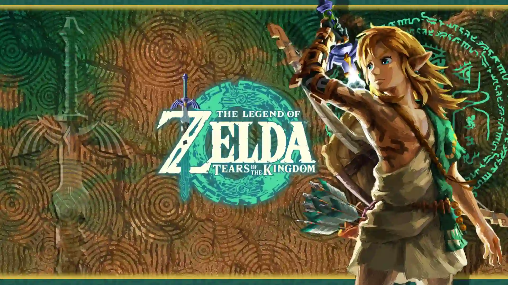
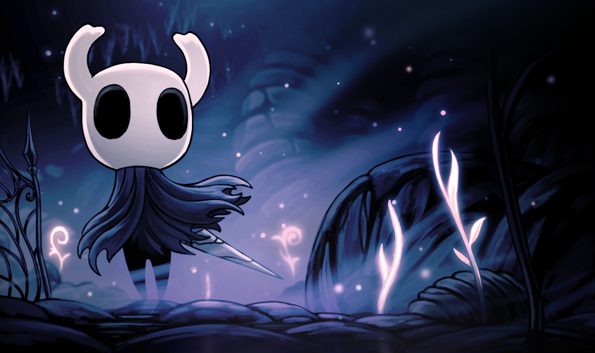

Bienvenido a mi blog de videojuegos
Explora análisis, recomendaciones y contenido multimedia sobre los mejores títulos de la industria.

Lo más épico del gaming, justo aquí
Elden Ring: la revolución de FromSoftware

Un RPG desafiante con mundo abierto que redefine el género...
Zelda: Tears of the Kingdom – Innovación total
Una secuela que supera todas las expectativas del clásico...
Hollow Knight: arte y precisión indie
Explora el mundo de Hallownest con este metroidvania oscuro y poético...